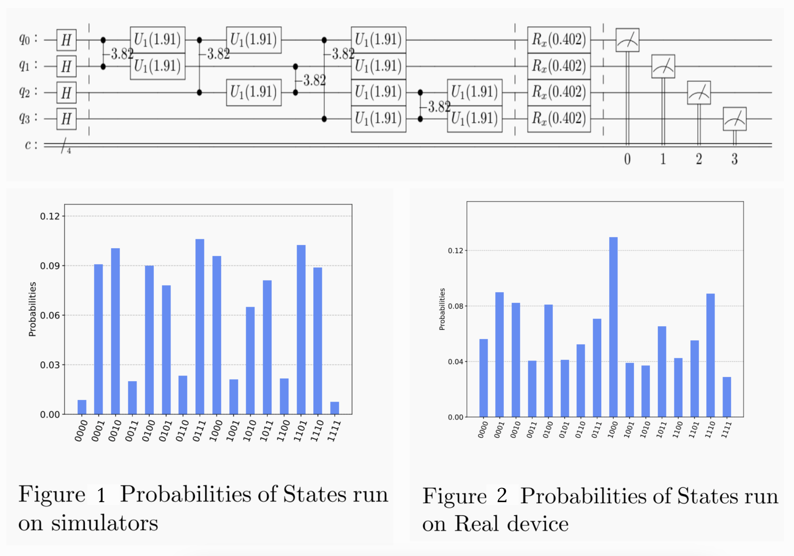

Warehouse space distribution using Particle swarm optimization algorithm
Jan 2022 – Apr 2022
Multi-Agent Path Finding (MAPF) involves the calculation of collision-free paths for a group of agents from their current locations to designated destinations. This problem has various applications, including in autonomous aircraft towing vehicles, automated warehouse systems, office robots, and video game characters. For instance, in automated warehouses, path planning for robots can be challenging due to the limited space available, which often results in narrow corridors where robots cannot pass each other. While warehouse robots operate continuously, a simplified version of the path-planning problem, known as the one-shot version of MAPF, is the most basic form of this problem. The goal of research in this area is to optimize the utilization of storage space in warehouses to minimize collisions between robots during online path finding processes.
Decision Making in Collectives in Dynamic Environments with Dynamic Individual Memory Report Poster
June 2021 – Dec 2021
Many decision-making models utilize Bayesian decision theory, which assumes that individuals have preexisting opinions about the potential states of different options. One such model is Arganda’s model, which was published in 2012 in the paper “A Common Rule for Decision Making in Animal Collectives Across Species.” The aim of this study was to examine the principles underlying this model and its influence on the decision-making behavior of individual agents when presented with binary options. In order to analyze migration, it is important to understand how groups of individuals reach consensus when selecting a new site for activities such as foraging or nesting. While replicating the results of Arganda’s model, it was observed that the behavior of individual agents was influenced by the quality of non-social sensory information they received about the available options (referred to as the “non-social parameters” or “a”). In Arganda’s model, most of the focus was on individuals who had access to the same quality of non-social information about the options, and the model only considered stationary environments (i.e., ecosystems that do not change). However, it was found that if individuals had different qualities of sensory non-social information about the options, they tended to choose the option with less non-social information more frequently. This unusual behavior can be observed in nature when individuals are separated in space and receive different sensory information about the options/sites, particularly in dynamic environments where the ecosystem is subject to change.
Identifying Influencer Agents in swarms for Effective Flock Control with Quantum Circuits Report
Feb 2021 – May 2021

The goal of this project is to utilize quantum computing (QC) to solve NP-hard problems in the field of robotics. NP-hard problems are a class of computational problems that are difficult to solve using traditional methods and require a significant amount of computational resources so the focus is to harness the power of entanglement and superposition of QC to address problems related to flock control in robotics. Given a set of agents \((ùê¥)\) and their influence/communication network, the project aims to divide the population into two subgroups: \(ùë†_1\), the group of influencers or leaders, and \(ùë†_2\), the group of followers. The goal is to identify the optimal configuration of \(ùë†_1\) and \(ùë†_2\) such that the influencers have maximum influence on the followers, enabling effective flock control in swarm of collectives while satisfying certain conditions.
Hybrid Quantum-classical Machine Learning for Covid 19
Jan 2021 – Mar 2021
This project aimed to classify COVID-19 cases based on 16 input features, including hematocrit, hemoglobin, platelets, red blood cells, lymphocytes, and mean corpuscular hemoglobin concentration (MCHC). To achieve this, the classical data was first transformed into quantum data using amplitude embedding, and then transfer learning (from quantum to classical) was utilized for the classification task. The aim of this approach was to improve the accuracy and efficiency of COVID-19 classification using quantum techniques.
UVC Disinfection Aerial Robots
Sep 2020 – Jan 2021

The aim of this project was to develop an autonomus UAV for UCV disinfection to tackle Covid-19. The aim of this project was to design and build an autonomous unmanned aerial vehicle (UAV) specifically designed for disinfecting large, enclosed spaces such as universities, hospitals, and public buildings. The UAV was intended to be used as a tool for combating the spread of COVID-19. The UAV was equipped with sensors and algorithms for autonomous navigation and precise application of disinfectant chemicals to surfaces within the target space. The project conducted extensive testing and evaluation of the UAV’s performance and efficacy in order to ensure that it was safe and effective for use in real-world situations. Ultimately, the UAV was intended to be a reliable and efficient means of mitigating the spread of COVID-19 in large, enclosed spaces where people gather.
Never Sinking Robotic Boats for Tackling Floods Report
Apr 2020 – Jul 2020
The aim of this project is to utilize superhydrophobic (SH) materials to fabricate robotic boats that are incapable of sinking and are able to increase their loading capacity as needed. In 2019, Guo et al. developed an assembly consisting of two parallel aluminum (Al) plates that have been treated to become SH, which is able to float on water and remains unsinkable even if holes are made in it. The objective of this project is to utilize such materials to address current issues related to waterborne robotic vehicles, particularly in flood situations. These robotic boats can be used to provide basic healthcare, evacuate people, and serve as storage units during floods, as well as be used for transportation and data collection in other contexts. Additionally, multiple robotic boats can be assembled to create bridges or large rafts.
Optical Radiational pressure Springs for applications in Metrology Report
Jan 2019 – Apr 2019
The objective of this project was to develop a theoretical model for the use of optical radiational pressure in the detection of Casimir effects and other fundamental forces. This was achieved through the investigation of the potential applications of optical radiational pressure for gravitational wave and Hawking radiation detection. In certain configurations, the same principle has the potential to be utilized to measure small forces such as electromagnetic forces, gravity, etc. through the alteration of the interference pattern between two outgoing laser beams. The resulting high precision sensors, such as accelerometers, gyroscopes, and magnetometers, have numerous potential applications.
Linguistics-Computational models of English Language Code
Aug 2019 – Dec 2019

Implementation of an HMM-based POS tagger for the English language. HMM is a special case of Bayesian inference. Modeling\(P(Y|X)\). Probability of symbol emissions , that is the likelihood of specific label ti, provided a specific word \(W_i\) , \(P(W_k| t_i)\). Probability of transition between states, i.e. the likelihood of a specific label relying upon the past labels \(P(t_i | t_i-1 t_i-2….. t_{i-k} ). P(t_k)\). Aim was to write a program in Python to implement an HMM-based POS tagger on the English language brown corpus as a dataset contains word and there POS tags.